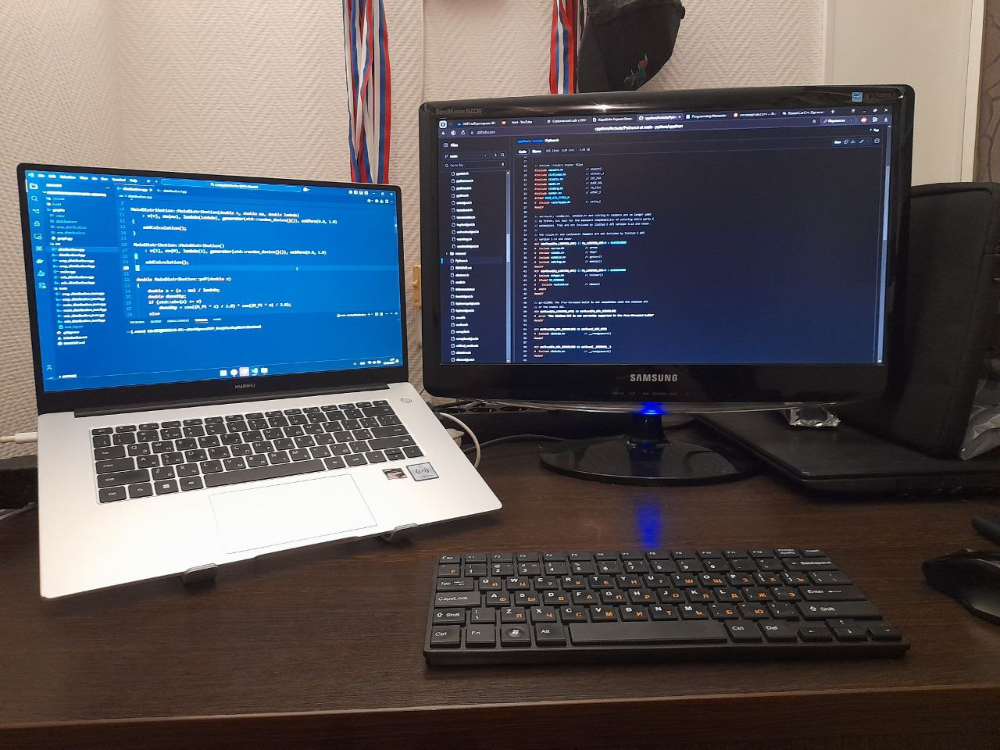

Мои навыки
C, C++, Python, Assembler, Bash, Rust, Git, SQL, Docker


Мои хобби
Я увлекаюсь играми, баскетболом, гиревым спортом и программированием
:)
В свободное время смотрю очень много видео на эти тематики и
очень люблю слушать подкасты об исторических событиях и немного о
матане. И Звездные войны!!! Обожаю Звездные войны!!! Я потребляю очень
много контента о вселенной Джорджа Лукаса :))
Признаю только первые 6 фильмов и расширенную вселенную!!!
Мои цели

Стать профессионалом в сфере разработки операционных систем и языков
программирования или писать настольные и кросслатформенные приложения
(с помощью средств C++). Так же хотелось бы попробовать себя в сфере
написания консольных утилит и потрогать ручками системы реального
времени.
Сейчас я изучаю исходный код библиотеки CPython и немного пробую
что-то самостоятельно реализовать. Может когда-нибудь я попаду в
список контрибьюторов Python )